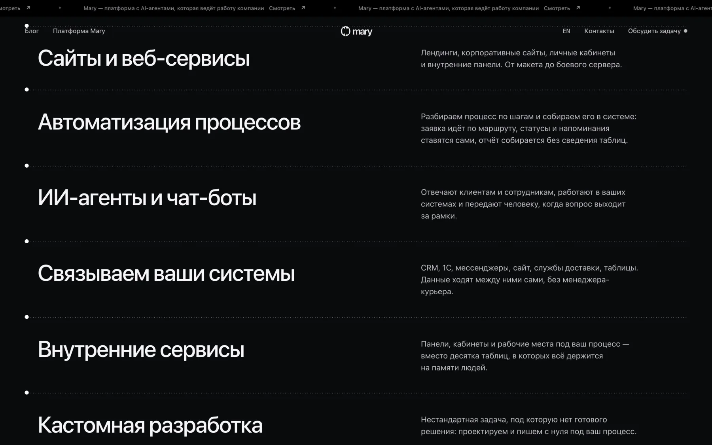
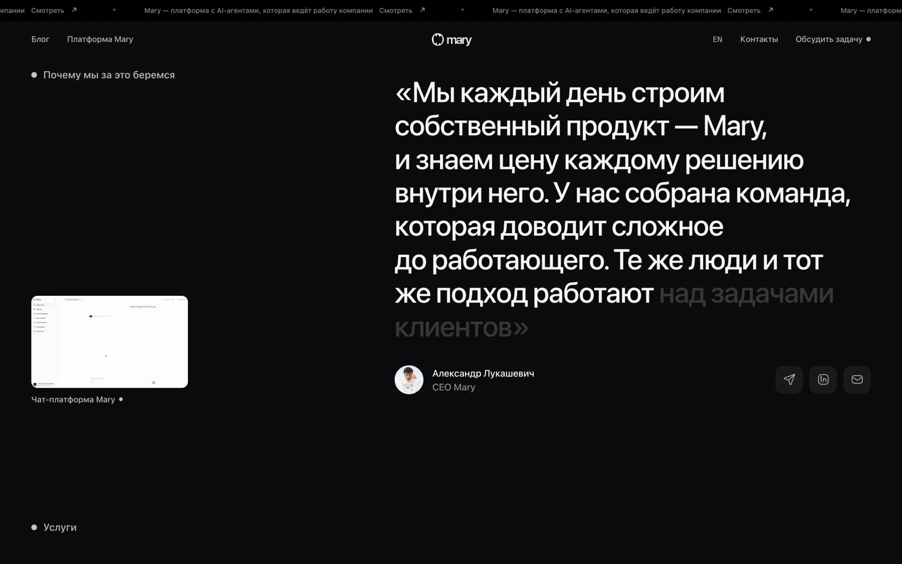

01Сайт разработки
sales.maryrose.by
У Mary есть второе направление: заказная разработка. Сайты, сервисы, внутренние системы и AI в рабочих процессах. Для него нужен был отдельный сайт с другим настроением: тёмный, спокойный, для тех, кто пришёл с конкретной задачей.
При этом он не должен выглядеть чужим. Навигация, формы, кнопки и тексты перекликаются с основным сайтом, поэтому человек, который переходит между ними, понимает, что это одна компания.
- СтруктураУслуги, как задача превращается в результат, кейсы, вопросы, заявка
- ПриёмСписок услуг раскрывается при наведении, бегущая строка этапов


